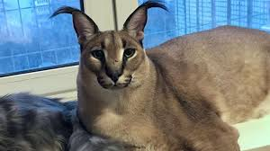

Big Floppa tenta comer bingus!!

Quem é o big Floppa?
O Caracal pertence à família dos Felídeos, que inclui o leão, o tigre, o gato doméstico e outros felinos.
Em 2020 o caracal chamado Gosha se tornou muito popular depois que a tutora Yelena divulgou
uma foto em que o gato selvagem aparece posando na janela com seu outro irmão, Zhora.

Quem é o bingus?
Sphynx, ou gato pelado canadense, é uma raça de gatos originária do Canadá, e que é conhecida por não ter pelos. Inclusivamente foi esta raça que inspirou o personagem Beerus do animangá Dragon Bal